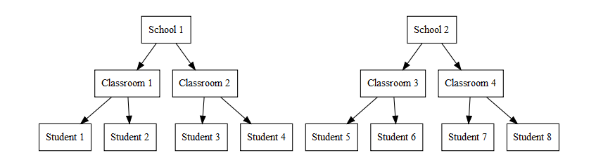
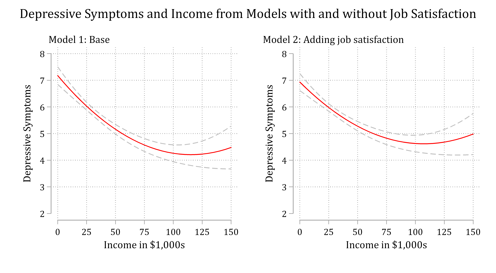
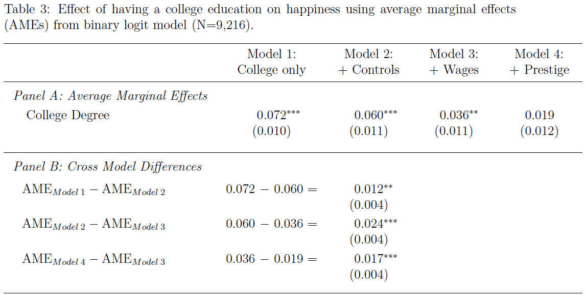
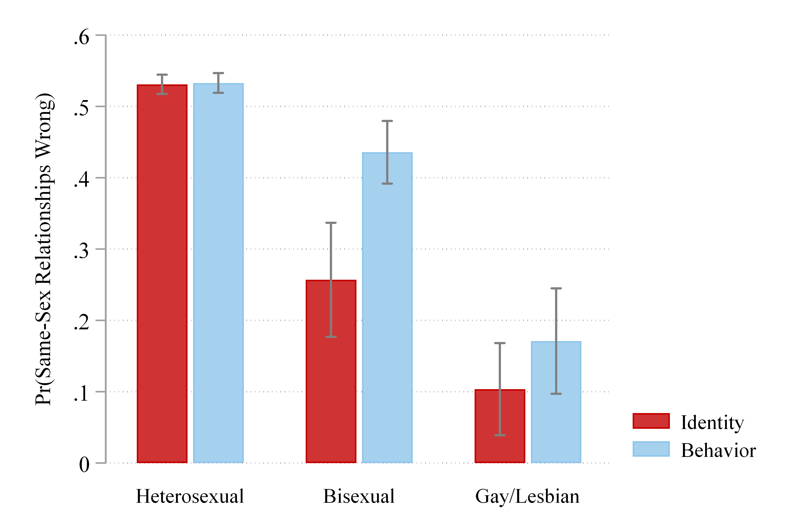
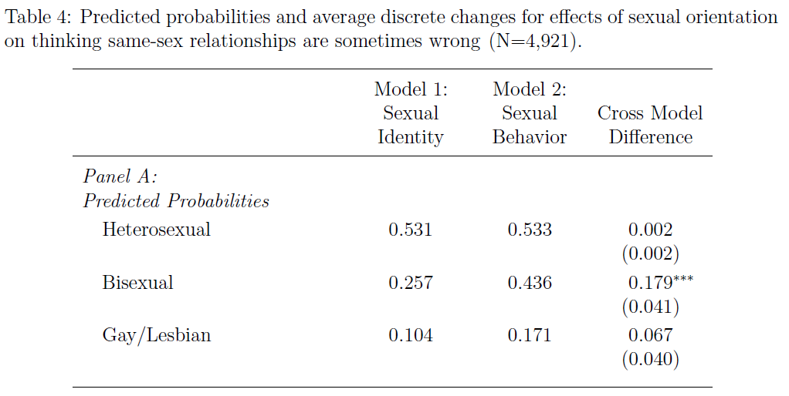
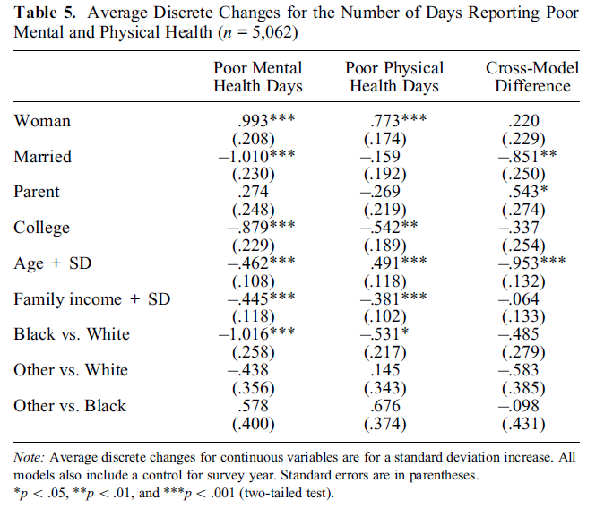
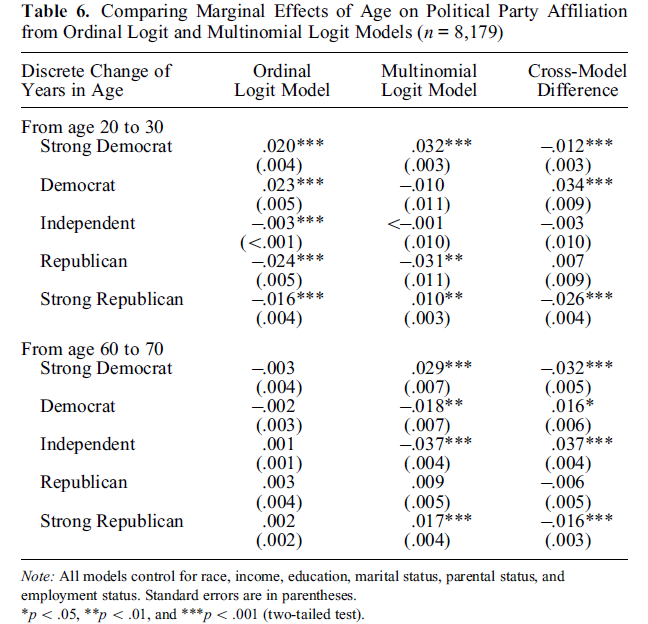
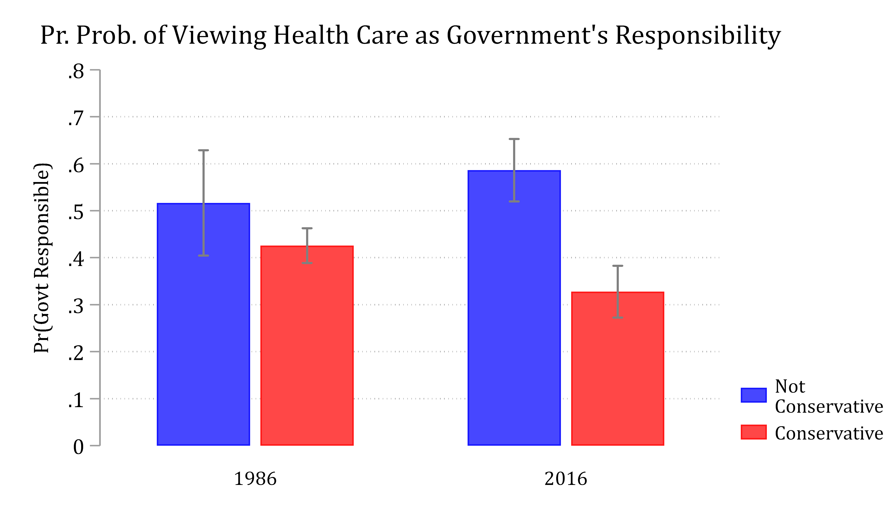

library(suest) # seemingly unrelated estimation
library(marginaleffects) # predictions and marginal effects
library(haven) # import Stata data
# Changes in continuous IVs centered on the observed values, like mecompare
options(marginaleffects_contrast_direction = "center")
ah <- zap_labels(read_dta("https://tdmize.github.io/data/data/ah4_cme.dta"))
factorize <- function(data, variables) {
data[variables] <- lapply(data[variables], factor)
data
}
vars61 <- c("depsympB", "income", "inc10", "age", "woman", "race", "college", "jobsat")
dat61 <- ah[complete.cases(ah[vars61]), ]
dat61 <- factorize(dat61, c("woman", "race", "jobsat"))
base61 <- lm(depsympB ~ income + I(income^2) + age + woman + race, data = dat61)
mediator61 <- lm(depsympB ~ income + I(income^2) + age + woman + race + jobsat,
data = dat61)
fit61 <- suest(base61, mediator61, model_names = c("Base", "Mediator"))7.9 A General Framework for Cross-Model Comparisons
- These limitations were the motivation behind my paper (with Long Doan and Scott Long) “A General Framework for Comparing Predictions and Marginal Effects Across Models” (Sociological Methodology 2019)
- Most of the technical details of the method are beyond the scope of this course (see the article if you are interested). In brief, we propose:
- Estimate two models of interest
- Examine predictions and/or marginal effects to summarize the relationships of interest
- Combine multiple model estimates using Seemingly Unrelated Estimation (SUEST)
- Test cross-model differences of predictions and/or MEs using Wald tests, considering the relationship between each model’s estimates
- See origin of and details of the SUEST method in Weesie 1999
Wald test of equality of cross-model effects
- A reminder of the Wald statistic to test \(H_{0}: {ME}_{1} = {ME}_{2}\) (same formula for tests of predictions):
\[z = \frac{\widehat{ME}_{1} - \widehat{ME}_{2}}{\sqrt{\widehat{\sigma}_{1}^{2} + \widehat{\sigma}_{2}^{2} - 2\widehat{\sigma}_{1,2}}}\]
- Where \({\widehat{\sigma}}_{m}\) is the standard error of the m’th ME and \({\widehat{\sigma}}_{1,2}\) is the covariance between two MEs
- \({\widehat{\sigma}}_{1,2}\) quantifies how \({ME}_{1}\) and \({ME}_{2}\) are related
- It is almost always non-zero and thus assuming it is zero almost always leads to an incorrect test statistic
- Some cross-model tests assume the covariance is zero (e.g., Paternoster et al. 1998). Will refer to this as \(z'\) in what follows:
\[z' = \frac{{\widehat{ME}}_{1} - {\widehat{ME}}_{2}}{\sqrt{\sigma_{1}^{2} + \sigma_{2}^{2}}}\]
Cross-model covariances: when are they non-zero?
- Cross-model covariances are non-zero when:
- Overlapping observations are used across models
- E.g., Mediation; specification checks; other nested models
- If there is clustering in the data
- E.g., Children within classrooms; voters within states; panel data
- Stratification in complex sampling
- This is accounted for in a similar way as clustering
- Overlapping observations are used across models
(Almost)
Brief aside on (cluster) robust SEs
Do robust SEs solve all of life’s problems? (no)
- It is tempting to view robust SEs as a solution to the problem of a misspecified model (e.g., you didn’t specify the functional form of age correctly so use robust SEs to “fix” the misspecification issue)
- However, “…robust standard errors expose methodological problems they do not fix… ’Robust standard errors’ are used in a vast array of scholarship to correct standard errors for model misspecification. However, when misspecification is bad enough to make classical and robust standard errors diverge, assuming that it is nevertheless not so bad as to bias everything else requires considerable optimism. And even if the optimism is warranted, settling for a misspecified model, with or without robust standard errors, will still bias estimators of all but a few quantities of interest.” (King and Roberts 2015)
- That is, the solution to a misspecified model is to change the model so it is specified correctly (e.g., include both age and age2 if warranted)
- Robust SEs can certainly help but the best solution is to use the correct model*
*This logic also extends for logit/probit over the linear probability model with robust SEs
Do cluster robust SEs solve many of life’s problems? AKA do I need to learn multilevel modeling? (depends)

- Consider a dataset where the observations are students (Level-1)
- But multiple students are nested within classrooms (Level-2) and within schools (Level-3)
- It may be tempting to view cluster robust SEs as an alternative to a multilevel/hierarchical model (another, more complicated method for accounting for clustered data) in these types of circumstances
- My view:
- If all you care about is Level-1 observations and variables (e.g., student attributes and scores) and Level-2 and above is simply a nuisance to be corrected for (e.g., multiple students from same classroom and/or school) then cluster robust SEs do what you need
- If you care about Level-2 or above observations and variables (e.g., attributes of the teacher/classroom or the school) and/or you care about cross-level interactions (e.g., how the effect of a student’s characteristics depends on the school they attend) then you should use a multilevel model
- For full details, I highly recommend McNeish, Stapleton, and Silverman (2017) “On the unnecessary ubiquity of hierarchical linear modeling”
- TLDR: Multilevel models are complicated to interpret and require many assumptions. These are useful when you need to answer a complicated multilevel question; they are probably unnecessary for many other questions that are only focused on Level-1 variables
SUEST application of cluster robust variance estimator
- SUEST is just a clever application of the cluster-robust variance estimator
- Essentially, treat overlapping observations across models as a cluster
- For models p and q, where \(u_{pi}\) and \(u_{qi}\) are the p and q specific equation-level scores:
\[Cov\left( {\widehat{\mathbf{\beta}}}_{p},{\widehat{\mathbf{\beta}}}_{q} \right) = (\mathbf{x}'\mathbf{x})_{p}^{-1}\left\lbrack \sum_{i = 1}^{N}{w_{i}(u_{pi}*u_{qi})'} \right\rbrack(\mathbf{x}'\mathbf{x})_{q}^{-1}\]
- Where \(w_{i}\) accounts for whether the observation is in both models or not
- Within-model variances of β coefficients are unaffected (except they are robust by default); however, cross-model covariances of βs are now estimated
Implementing SUEST + MEs in Stata and R
- Mize, Doan, and Long 2019 develop a method for combining SUEST with predictions/MEs
- Mize (2026) further extends the SUEST approach to multilevel and panel models
- In Stata, use the suest2 command* and/or mecompare
- With 2+ models, mecompare calls suest2 behind the scenes for you
- See how to replicate all of Mize, Doan, and Long 2019’s examples using mecompare
- In R, use suest to combine the models, and avg_comparisons and/or other marginaleffects functions
*Stata has a suest command but it does not work well for MEs
Workflow for SUEST + MEs in Stata and R
- First, fit two models of interest and save their estimates
logit dv iv1 iv2, vce(robust)
est store basemod
logit dv iv1 iv2 med1 med2, vce(robust)
est store medmodbasemod <- glm(dv ~ iv1 + iv2, family = binomial, data = df)
medmod <- glm(dv ~ iv1 + iv2 + med1 + med2, family = binomial, data = df)- Note that the SUEST method uses the robust variance estimator. Thus, to match its results I strongly recommend you include robust SEs as an option on the individual models*
- Combine the estimates using SUEST
suest2 basemod medmodcombo <- suest(basemod, medmod)*In R, include vcov = “HC1” when you summarize the model estimates or calculate MEs to obtain robust SEs
- In Stata, can pass the individual stored models directly to mecompare, which will call suest2 behind the scenes to combine the models for you
- Specify the 2+ stored models( ) to compare
mecompare iv1, models(basemod medmod)- In R, use avg_comparisons to calculate MEs, listing the stored suest estimates as the model
avg_comparisons(combo, variables = list(iv1 = "sd"), newdata = df)Examples and applications
- Below, a very brief run through some example applications of our framework (see Mize, Doan, and Long 2019 for details)
Ex 1: Mediation of curvilinear effects in linear regression
- Data: Add Health Wave IV (\(\overline{x}_{age} \approx 28.5\))
- DV: Depressive symptoms
- IV: Income and income2
- Potential mediator: Job satisfaction
- Model: Linear regression
use "https://tdmize.github.io/data/data/ah4_cme", clear(ah4_cme.dta | Add Health Wave 4 | 2018-07-10)drop if missing(depsympB, income, inc10, age, woman, race, college, jobsat)(0 observations deleted)qui reg depsympB c.income##c.income c.age i.woman i.race, vce(robust)
est store basemod
qui reg depsympB c.income##c.income c.age i.woman i.race i.jobsat, vce(robust)
est store medmod- income and income2 included as focal IV
- jobsat in 2nd model as mediator

*The amount( ) option allows for customized change for continuous IVs
mecompare income, models(basemod medmod) amount(sd)Predicting: Linear prediction
Marginal effects and cross-model differences (N_basemod=4307) (N_medmod=4307)
| ME # Estimate Robust SE P>|z|
---------------------------------+---------------------------------------
income + SD (centered) |
basemod | 1 -0.982 0.098 0.000
medmod | 2 -0.797 0.096 0.000
Difference | 3 -0.184 0.027 0.000*Show proportion mediated
di 1 - (-.797 / -.982).18839104effects61 <- avg_comparisons(fit61,
variables = list(income = sd(dat61$income)), newdata = dat61)
effects61
Group Estimate Std. Error z Pr(>|z|) S 2.5 % 97.5 %
Base -0.982 0.0983 -9.98 <0.001 75.6 -1.174 -0.789
Mediator -0.797 0.0958 -8.32 <0.001 53.3 -0.985 -0.609
Term: income
Type: response
Comparison: +27.2108562966562hypotheses(effects61, hypothesis = difference ~ revpairwise)
Hypothesis Estimate Std. Error z Pr(>|z|) S 2.5 % 97.5 %
(Base) - (Mediator) -0.184 0.0272 -6.77 <0.001 36.2 -0.238 -0.131# Show proportion mediated
1 - (-.797 / -.982)[1] 0.188391In model 1, the ME is -0.982, indicating that a standard deviation increase in income (about $34,500) is associated with about one fewer depressive symptom. The ME of income is reduced to -0.797 in model 2 after accounting for job satisfaction. A test of the difference in MEs across models shows that accounting for job satisfaction decreases the average effect of income by 0.184, a significant reduction of about 19% (cross-model difference p < .001)
Ex 2: Mediation in binary logit
- Data: General Social Survey 2000 – 2016
- DV: Life happiness (1 = very happy; 0 = anything else)
- IV: College degree (coded as 1)
- Potential mediators: Hourly wages and occupational prestige
- Model: Binary logit
use "https://tdmize.github.io/data/data/gss_cme", clear(gss_cme.dta | GSS 1972 - 2016 Weighted | 2018-07-10)drop if year < 2000(38,116 observations deleted)drop if employed != 1(9,556 observations deleted)drop if missing(vhappy, college, wages, occprest, age, married, ///
parent, woman, conserv, reltrad)(5,578 observations deleted)*Store the 4 nested models
quietly logit vhappy i.college, vce(robust)
estimates store m1
quietly logit vhappy i.college i.married i.parent i.woman i.conserv ///
i.reltrad i.year c.age##c.age, vce(robust)
estimates store m2
quietly logit vhappy i.college c.wages i.married i.parent i.woman i.conserv //
/
i.reltrad i.year c.age##c.age, vce(robust)
estimates store m3
quietly logit vhappy i.college c.wages c.occprest i.married i.parent i.woman /
//
i.conserv i.reltrad i.year c.age##c.age, vce(robust)
estimates store m4
*Use mecompare to get all MEs
mecompare college, models(m1 m2 m3 m4)Predicting: Pr(vhappy)
Marginal effects across models (N_m1=9216) (N_m2=9216) (N_m3=9216) (N_m4=9216)
| ME # Estimate Robust SE P>|z|
---------------------------------+---------------------------------------
college |
College Deg - No Col Deg |
m1 | 1 0.072 0.010 0.000
m2 | 2 0.060 0.011 0.000
m3 | 3 0.036 0.011 0.001
m4 | 4 0.019 0.012 0.103gss <- zap_labels(read_dta("https://tdmize.github.io/data/data/gss_cme.dta"))
vars62 <- c("vhappy", "college", "wages", "occprest", "age", "married",
"parent", "woman", "conserv", "reltrad", "year", "employed")
dat62 <- subset(gss, year >= 2000 & employed == 1)
dat62 <- dat62[complete.cases(dat62[vars62]), ]
dat62 <- factorize(dat62, c("college", "married", "parent", "woman", "conserv",
"reltrad", "year"))
model62a <- glm(vhappy ~ college, family = binomial("logit"), data = dat62)
model62b <- glm(vhappy ~ college + married + parent + woman + conserv + reltrad +
year + age + I(age^2), family = binomial("logit"), data = dat62)
model62c <- glm(vhappy ~ college + wages + married + parent + woman + conserv +
reltrad + year + age + I(age^2), family = binomial("logit"),
data = dat62)
model62d <- glm(vhappy ~ college + wages + occprest + married + parent + woman +
conserv + reltrad + year + age + I(age^2),
family = binomial("logit"), data = dat62)
fit62 <- suest(model62a, model62b, model62c, model62d,
model_names = c("Model 1", "Model 2", "Model 3", "Model 4"))
effects62 <- avg_comparisons(fit62, variables = "college", newdata = dat62)
effects62
Group Estimate Std. Error z Pr(>|z|) S 2.5 % 97.5 %
Model 1 0.0718 0.0103 6.95 <0.001 38.0 0.0516 0.0921
Model 2 0.0599 0.0105 5.69 <0.001 26.2 0.0393 0.0806
Model 3 0.0360 0.0111 3.24 0.0012 9.7 0.0142 0.0577
Model 4 0.0192 0.0118 1.63 0.1034 3.3 -0.0039 0.0423
Term: college
Type: response
Comparison: 1 - 0*To automate all cross-model comparisons, use the pwcompare option of metest
metest 1/4, pwcompare | estimate se pvalue
---------------------------------+--------------------------------
college |
m2 vs m1 | -0.012 0.004 0.003
m3 vs m1 | -0.036 0.006 0.000
m4 vs m1 | -0.053 0.007 0.000
m3 vs m2 | -0.024 0.004 0.000
m4 vs m2 | -0.041 0.006 0.000
m4 vs m3 | -0.017 0.004 0.000 hypotheses(effects62, hypothesis = ~ sequential)
Hypothesis Estimate Std. Error z Pr(>|z|) S 2.5 % 97.5 %
(Model 2) - (Model 1) -0.0119 0.00402 -2.95 0.00313 8.3 -0.0198 -0.00400
(Model 3) - (Model 2) -0.0240 0.00403 -5.94 < 0.001 28.4 -0.0319 -0.01606
(Model 4) - (Model 3) -0.0168 0.00445 -3.77 < 0.001 12.6 -0.0255 -0.00805
“The AME indicates that, on average, the probability of being happy is 0.072 higher for individuals with a college degree (p< .001). Model 2 adds demographic control variables, reducing the AME for college to 0.060, which remains significant. A direct test of the difference in the AME from model 1 to model 2 shows that adding the controls significantly decreases the effect of college by 0.012 (p < .01; see Panel B of Table 3).”
Ex 3: Specification checks for IVs
- Data: General Social Survey 2008 – 2016
- DV: Views of same-sex relationships (0 = not wrong at all; 1 = anything else)
- IV: Sexual orientation (heterosexual, bisexual, gay/lesbian)
- Self-identification (identity)
- Dating history (behavior)
- Model: Binary logit

use "https://tdmize.github.io/data/data/gss_cme", clear(gss_cme.dta | GSS 1972 - 2016 Weighted | 2018-07-10)drop if missing(samesexB, sexident, sexbehav, college, woman, race, age, year)(57,545 observations deleted)quietly logit samesexB i.sexbehav i.woman i.college c.age i.race i.year, vce(r
obust)
estimates store behavior
quietly logit samesexB i.sexident i.woman i.college c.age i.race i.year, vce(r
obust)
estimates store identity
mecompare i.sexbehav i.sexident, models(behavior identity)Predicting: Pr(samesexB)
Marginal effects and cross-model differences (N_behavior=4921)
(N_identity=4921)
| ME # Estimate Robust SE P>|z|
---------------------------------+---------------------------------------
sexbehav |
Bisexual - Heterosexual |
behavior | 1 -0.097 0.023 0.000
identity |
Difference |
Gay - Heterosexual |
behavior | 2 -0.362 0.038 0.000
identity |
Difference |
---------------------------------+---------------------------------------
sexident |
Bisexual - Heterosexual |
behavior |
identity | 3 -0.274 0.041 0.000
Difference |
Gay - Heterosexual |
behavior |
identity | 4 -0.428 0.034 0.000
Difference | metest 1 - 3 | estimate se pvalue
---------------------------------+--------------------------------
sexbehav_Bis~h - sexident_Bis~e | 0.177 0.043 0.000 metest 2 - 4 | estimate se pvalue
---------------------------------+--------------------------------
sexbehav_Gay~r - sexident_Gay~y | 0.066 0.041 0.106 *To compare predictions, use suest2 and then margins
suest2 behavior identitySimultaneous results for behavior, identity Number of obs = 4,921
-------------------------------------------------------------------------------
| Robust
| Coefficient std. err. z P>|z| [95% conf. interval]
--------------+----------------------------------------------------------------
behavior_sa~B |
sexbehav |
Bisexual | -0.441 0.108 -4.096 0.000 -0.652 -0.230
Gay | -1.905 0.290 -6.561 0.000 -2.475 -1.336
|
woman |
Women | -0.427 0.062 -6.894 0.000 -0.549 -0.306
|
college |
College De.. | -0.870 0.068 -12.863 0.000 -1.002 -0.737
age | 0.030 0.002 15.541 0.000 0.026 0.034
|
race |
black | 0.936 0.094 9.924 0.000 0.751 1.121
other | 0.377 0.108 3.495 0.000 0.166 0.589
|
year |
2010 | -0.203 0.098 -2.075 0.038 -0.394 -0.011
2012 | -0.370 0.098 -3.782 0.000 -0.561 -0.178
2014 | -0.560 0.089 -6.277 0.000 -0.735 -0.385
2016 | -0.754 0.105 -7.185 0.000 -0.960 -0.549
|
_cons | -0.540 0.118 -4.593 0.000 -0.770 -0.309
--------------+----------------------------------------------------------------
identity_sa~B |
sexident |
Bisexual | -1.328 0.237 -5.593 0.000 -1.794 -0.863
Gay | -2.513 0.377 -6.659 0.000 -3.252 -1.773
|
woman |
Women | -0.419 0.062 -6.727 0.000 -0.541 -0.297
|
college |
College De.. | -0.851 0.068 -12.566 0.000 -0.984 -0.718
age | 0.029 0.002 15.160 0.000 0.026 0.033
|
race |
black | 0.958 0.095 10.051 0.000 0.771 1.145
other | 0.382 0.109 3.518 0.000 0.169 0.595
|
year |
2010 | -0.213 0.098 -2.185 0.029 -0.405 -0.022
2012 | -0.368 0.098 -3.739 0.000 -0.561 -0.175
2014 | -0.563 0.090 -6.264 0.000 -0.739 -0.387
2016 | -0.744 0.106 -7.039 0.000 -0.952 -0.537
|
_cons | -0.535 0.117 -4.554 0.000 -0.765 -0.305
-------------------------------------------------------------------------------*make predictions with margins, post; be careful to match up IV with model
margins sexbehav sexident, postPredictive margins Number of obs = 4,921
Model VCE: Robust
1._predict: Pr(samesexB), predict(model(behavior))
2._predict: Pr(samesexB), predict(model(identity))
-------------------------------------------------------------------------------
| Delta-method
| Margin std. err. z P>|z| [95% conf. interval]
--------------+----------------------------------------------------------------
_predict#|
sexbehav |
1 #|
Heterosexual | 0.533 0.007 75.067 0.000 0.519 0.547
1#Bisexual | 0.436 0.022 19.487 0.000 0.392 0.480
1#Gay | 0.171 0.038 4.534 0.000 0.097 0.245
|
_predict#|
sexident |
1 #|
Heterosexual | 0.517 0.007 77.817 0.000 0.504 0.530
1#Bisexual | 0.517 0.007 77.817 0.000 0.504 0.530
1#Gay | 0.517 0.007 77.817 0.000 0.504 0.530
|
_predict#|
sexbehav |
2 #|
Heterosexual | 0.517 0.007 78.009 0.000 0.504 0.530
2#Bisexual | 0.517 0.007 78.009 0.000 0.504 0.530
2#Gay | 0.517 0.007 78.009 0.000 0.504 0.530
|
_predict#|
sexident |
2 #|
Heterosexual | 0.531 0.007 77.364 0.000 0.518 0.545
2#Bisexual | 0.257 0.041 6.291 0.000 0.177 0.337
2#Gay | 0.104 0.033 3.136 0.002 0.039 0.168
-------------------------------------------------------------------------------*when margins, post is used -- metest can be used to refer to prediction #
qui metest, clear
qui metest 1 - 10, add rowname("hetero")
qui metest 2 - 11, add rowname("bisexual")
qui metest 3 - 12, add rowname("gay-lesb")
metest, title("Difference in pr(): behavior - identity")Difference in pr(): behavior - identity
| estimate se pvalue
---------------------------------+--------------------------------
hetero | 0.002 0.002 0.319
bisexual | 0.179 0.041 0.000
gay-lesb | 0.067 0.040 0.093 vars63 <- c("samesexB", "sexident", "sexbehav", "college",
"woman", "race", "age", "year")
dat63 <- gss[complete.cases(gss[vars63]), ]
dat63 <- factorize(dat63, c("sexident", "sexbehav", "college", "woman", "race", "year"))
behavior63 <- glm(samesexB ~ sexbehav + woman + college + age + race + year,
family = binomial("logit"), data = dat63)
identity63 <- glm(samesexB ~ sexident + woman + college + age + race + year,
family = binomial("logit"), data = dat63)
fit63 <- suest(behavior63, identity63, model_names = c("Behavior", "Identity"))
effects63 <- avg_comparisons(fit63,
variables = list(sexbehav = "reference", sexident = "reference"), newdata = dat63)
effects63
Term Group Contrast Estimate Std. Error z Pr(>|z|) S 2.5 % 97.5 %
sexbehav Behavior 2 - 1 -0.0972 0.0235 -4.14 <0.001 14.8 -0.143 -0.0511
sexbehav Behavior 3 - 1 -0.3620 0.0384 -9.43 <0.001 67.7 -0.437 -0.2867
sexbehav Identity 2 - 1 0.0000 NA NA NA NA NA NA
sexbehav Identity 3 - 1 0.0000 NA NA NA NA NA NA
sexident Behavior 2 - 1 0.0000 NA NA NA NA NA NA
sexident Behavior 3 - 1 0.0000 NA NA NA NA NA NA
sexident Identity 2 - 1 -0.2741 0.0415 -6.61 <0.001 34.6 -0.355 -0.1928
sexident Identity 3 - 1 -0.4275 0.0337 -12.67 <0.001 119.8 -0.494 -0.3614
Type: responsealternative_predictor_hypothesis <- function(x) {
group <- as.character(x$group)
term <- as.character(x$term)
behavior <- x$estimate[term == "sexbehav" & group == "Behavior"]
identity <- x$estimate[term == "sexident" & group == "Identity"]
data.frame(
term = c("Behavior bisexual - Identity bisexual",
"Behavior gay - Identity gay",
"(Behavior gay - bisexual) - (Identity gay - bisexual)"),
estimate = c(behavior[1] - identity[1], behavior[2] - identity[2],
(behavior[2] - behavior[1]) - (identity[2] - identity[1])))
}
avg_comparisons(fit63,
variables = list(sexbehav = "reference", sexident = "reference"),
newdata = dat63, hypothesis = alternative_predictor_hypothesis)
Term Estimate Std. Error z Pr(>|z|) S
Behavior bisexual - Identity bisexual 0.1769 0.0425 4.16 <0.001 15.0
Behavior gay - Identity gay 0.0655 0.0406 1.61 0.1063 3.2
(Behavior gay - bisexual) - (Identity gay - bisexual) -0.1114 0.0587 -1.90 0.0578 4.1
2.5 % 97.5 %
0.0936 0.26023
-0.0140 0.14507
-0.2264 0.00368
Type: response# Predictions from each model, with both measures set to the same category
orientation <- levels(dat63$sexident)
pred63 <- avg_predictions(fit63,
variables = list(sexbehav = orientation, sexident = orientation),
newdata = dat63)
pred63[pred63$sexbehav == pred63$sexident, ]
Group sexbehav sexident Estimate Std. Error z Pr(>|z|) S 2.5 % 97.5 %
Behavior 1 1 0.533 0.00710 75.07 < 0.001 Inf 0.5191 0.547
Behavior 2 2 0.436 0.02236 19.49 < 0.001 278.6 0.3920 0.480
Behavior 3 3 0.171 0.03772 4.53 < 0.001 17.4 0.0971 0.245
Identity 1 1 0.531 0.00686 77.36 < 0.001 Inf 0.5176 0.545
Identity 2 2 0.257 0.04085 6.29 < 0.001 31.6 0.1769 0.337
Identity 3 3 0.104 0.03302 3.14 0.00171 9.2 0.0388 0.168
Type: response# Difference in predictions across models: behavior - identity
orientation_differences <- function(x) {
same <- x$sexbehav == x$sexident
data.frame(
term = c("Heterosexual", "Bisexual", "Gay/Lesbian"),
estimate = x$estimate[same & x$group == "Behavior"] -
x$estimate[same & x$group == "Identity"])
}
avg_predictions(fit63,
variables = list(sexbehav = orientation, sexident = orientation),
newdata = dat63, hypothesis = orientation_differences)
Term Estimate Std. Error z Pr(>|z|) S 2.5 % 97.5 %
Heterosexual 0.00192 0.00193 0.996 0.3194 1.6 -0.00186 0.00569
Bisexual 0.17883 0.04136 4.324 <0.001 16.0 0.09778 0.25989
Gay/Lesbian 0.06745 0.04013 1.681 0.0928 3.4 -0.01121 0.14611
Type: response
“The formal tests support the general inferences described earlier: there is a significant difference in opinions of same-sex relationships for bisexual individuals depending on whether classification is based on identity or behavior.”
Ex 4: Marginal effects across different DVs
- Data: General Social Survey 2002, 2006, 2010, 2014
- DVs*:
- 0 – 30: Days of poor mental health days last month
- 0 – 30: Days of poor physical health days last month
- IVs: Gender, marital status, parental status, college completion, age, family income, race
- Model: Negative binomial regression (count model)
- DVs*:
*NOTE: “Typically, to compare effects across outcomes, the outcomes need to have the same level of measurement. For example, it would be difficult to compare a marginal effect of a predictor on a continuous outcome to the marginal effect for the same predictor on a binary outcome.” (p.177)
use "https://tdmize.github.io/data/data/gss_cme", clear(gss_cme.dta | GSS 1972 - 2016 Weighted | 2018-07-10)drop if missing(mntlhlth, physhlth, woman, married, age, faminc, race, college
, parent, reltrad)(57,404 observations deleted)quietly nbreg mntlhlth i.woman i.married i.parent i.college c.age faminc ///
i.race i.year, vce(robust)
estimates store mental
quietly nbreg physhlth i.woman i.married i.parent i.college c.age faminc ///
i.race i.year, vce(robust)
estimates store physical
mecompare, models(mental physical) amount(sd)Predicting: Predicted mean of mntlhlth (mental), Predicted mean of physhlth (phy
> sical)
Marginal effects and cross-model differences (N_mental=5062) (N_physical=5062)
| ME # Estimate Robust SE P>|z|
---------------------------------+---------------------------------------
woman |
Women - Men |
mental | 1 0.993 0.208 0.000
physical | 2 0.773 0.174 0.000
Difference | 3 0.220 0.229 0.337
---------------------------------+---------------------------------------
married |
Married - Not Married |
mental | 4 -1.010 0.230 0.000
physical | 5 -0.159 0.192 0.408
Difference | 6 -0.851 0.250 0.001
---------------------------------+---------------------------------------
parent |
Parent - No Children |
mental | 7 0.274 0.248 0.268
physical | 8 -0.269 0.219 0.218
Difference | 9 0.543 0.274 0.048
---------------------------------+---------------------------------------
college |
College Deg - No Col Deg |
mental | 10 -0.879 0.229 0.000
physical | 11 -0.542 0.189 0.004
Difference | 12 -0.337 0.254 0.184
---------------------------------+---------------------------------------
age + SD (centered) |
mental | 13 -0.496 0.124 0.000
physical | 14 0.450 0.099 0.000
Difference | 15 -0.946 0.133 0.000
---------------------------------+---------------------------------------
faminc + SD (centered) |
mental | 16 -0.476 0.135 0.000
physical | 17 -0.413 0.120 0.001
Difference | 18 -0.063 0.154 0.682
---------------------------------+---------------------------------------
race |
black - white |
mental | 19 -1.016 0.258 0.000
physical | 20 -0.531 0.217 0.015
Difference | 21 -0.485 0.279 0.083
other - white |
mental | 22 -0.438 0.356 0.219
physical | 23 0.145 0.343 0.672
Difference | 24 -0.583 0.385 0.130
---------------------------------+---------------------------------------
year |
2006 - 2002 |
mental | 25 -0.944 0.270 0.000
physical | 26 -0.292 0.225 0.194
Difference | 27 -0.652 0.298 0.029
2010 - 2002 |
mental | 28 -0.068 0.318 0.832
physical | 29 0.323 0.261 0.215
Difference | 30 -0.391 0.355 0.271
2014 - 2002 |
mental | 31 -0.582 0.302 0.054
physical | 32 -0.229 0.245 0.351
Difference | 33 -0.353 0.324 0.275vars64 <- c("mntlhlth", "physhlth", "woman", "married", "age",
"faminc", "race", "college", "parent", "reltrad")
dat64 <- gss[complete.cases(gss[vars64]), ]
dat64 <- factorize(dat64, c("woman", "married", "parent", "college", "race", "year"))
mental64 <- MASS::glm.nb(mntlhlth ~ woman + married + parent + college + age +
faminc + race + year, data = dat64)
physical64 <- MASS::glm.nb(physhlth ~ woman + married + parent + college + age +
faminc + race + year, data = dat64)
fit64 <- suest(mental64, physical64, model_names = c("Mental", "Physical"))
variables64 <- list(woman = "reference", married = "reference", parent = "reference",
college = "reference", age = sd(dat64$age), faminc = sd(dat64$faminc),
race = "reference", year = "reference")
effects64 <- avg_comparisons(fit64, variables = variables64, newdata = dat64)
effects64
Term Group Contrast Estimate Std. Error z Pr(>|z|) S 2.5 % 97.5 %
age Mental +13.0755231484462 -0.4964 0.1244 -3.990 <0.001 13.9 -0.740 -0.25257
age Physical +13.0755231484462 0.4497 0.0993 4.530 <0.001 17.4 0.255 0.64426
college Mental 1 - 0 -0.8794 0.2286 -3.848 <0.001 13.0 -1.327 -0.43145
college Physical 1 - 0 -0.5422 0.1889 -2.870 0.0041 7.9 -0.912 -0.17198
faminc Mental +35.054788229243 -0.4760 0.1354 -3.515 <0.001 11.1 -0.741 -0.21054
faminc Physical +35.054788229243 -0.4129 0.1200 -3.442 <0.001 10.8 -0.648 -0.17778
married Mental 1 - 0 -1.0103 0.2298 -4.397 <0.001 16.5 -1.461 -0.55992
married Physical 1 - 0 -0.1591 0.1924 -0.827 0.4082 1.3 -0.536 0.21795
parent Mental 1 - 0 0.2741 0.2476 1.107 0.2682 1.9 -0.211 0.75944
parent Physical 1 - 0 -0.2692 0.2186 -1.231 0.2182 2.2 -0.698 0.15931
race Mental 2 - 1 -1.0159 0.2577 -3.941 <0.001 13.6 -1.521 -0.51070
race Mental 3 - 1 -0.4381 0.3563 -1.230 0.2188 2.2 -1.136 0.26022
race Physical 2 - 1 -0.5308 0.2173 -2.443 0.0146 6.1 -0.957 -0.10487
race Physical 3 - 1 0.1451 0.3431 0.423 0.6724 0.6 -0.527 0.81749
woman Mental 1 - 0 0.9929 0.2080 4.774 <0.001 19.1 0.585 1.40062
woman Physical 1 - 0 0.7734 0.1740 4.446 <0.001 16.8 0.432 1.11430
year Mental 2006 - 2002 -0.9438 0.2703 -3.492 <0.001 11.0 -1.474 -0.41408
year Mental 2010 - 2002 -0.0675 0.3175 -0.213 0.8316 0.3 -0.690 0.55484
year Mental 2014 - 2002 -0.5819 0.3016 -1.929 0.0537 4.2 -1.173 0.00922
year Physical 2006 - 2002 -0.2917 0.2245 -1.299 0.1939 2.4 -0.732 0.14839
year Physical 2010 - 2002 0.3233 0.2606 1.240 0.2148 2.2 -0.187 0.83400
year Physical 2014 - 2002 -0.2286 0.2449 -0.933 0.3507 1.5 -0.709 0.25148
Type: responsehypotheses(effects64, hypothesis = difference ~ revpairwise | term + contrast)
Term Contrast Hypothesis Estimate Std. Error z Pr(>|z|) S 2.5 %
age +13.0755231484462 (Mental) - (Physical) -0.9461 0.133 -7.133 <0.001 39.9 -1.2061
college 1 - 0 (Mental) - (Physical) -0.3372 0.254 -1.327 0.1844 2.4 -0.8351
faminc +35.054788229243 (Mental) - (Physical) -0.0631 0.154 -0.409 0.6822 0.6 -0.3650
married 1 - 0 (Mental) - (Physical) -0.8512 0.250 -3.409 <0.001 10.6 -1.3405
parent 1 - 0 (Mental) - (Physical) 0.5434 0.274 1.981 0.0475 4.4 0.0059
race 2 - 1 (Mental) - (Physical) -0.4851 0.279 -1.736 0.0826 3.6 -1.0328
race 3 - 1 (Mental) - (Physical) -0.5832 0.385 -1.515 0.1299 2.9 -1.3379
woman 1 - 0 (Mental) - (Physical) 0.2196 0.229 0.959 0.3373 1.6 -0.2290
year 2006 - 2002 (Mental) - (Physical) -0.6521 0.298 -2.187 0.0287 5.1 -1.2364
year 2010 - 2002 (Mental) - (Physical) -0.3908 0.355 -1.101 0.2710 1.9 -1.0865
year 2014 - 2002 (Mental) - (Physical) -0.3533 0.324 -1.091 0.2753 1.9 -0.9880
97.5 %
-0.6862
0.1607
0.2389
-0.3618
1.0808
0.0626
0.1715
0.6682
-0.0678
0.3050
0.2814
Example interpretations
We find, for example, that women report 0.99 more days of poor mental health, and 0.77 more days of poor physical health, per month, than do men. Although the effect of gender is 0.22 larger for mental health, the difference is not statistically significant.
…being married significantly reduces the days of poor mental health by 1.01, and the effect of marriage on physical health is nonsignificant. A test of the cross-model difference shows that the effect of marriage on mental health is significantly larger than the effect of marriage on physical health (cross-model difference = -.851, p < .01).
Similarly, the effect of age differs significantly across the two outcomes, with aging associated with fewer poor mental health days but more poor physical health days.
Ex 5: Comparing across model types
- Data: 2010 to 2016 GSS
- DV: Political party ID
- Strong Democrat, Democrat, Independent, Republican, Strong Republican
- IV: Age
- Models:
- Ordinal logit
- Multinomial logit
- DV: Political party ID
use "https://tdmize.github.io/data/data/gss_cme", clear(gss_cme.dta | GSS 1972 - 2016 Weighted | 2018-07-10)drop if year < 2010(53,043 observations deleted)drop if missing(partyid5, woman, edyrs, age, parent, married, faminc, employed
, region4, year)(1,244 observations deleted)quietly ologit partyid5 c.age##c.age i.woman c.edyrs i.parent i.married i.race
///
c.faminc i.employed i.region4 i.year, vce(robust)
estimates store ordinal
quietly mlogit partyid5 c.age##c.age i.woman c.edyrs i.parent i.married i.race
///
c.faminc i.employed i.region4 i.year, vce(robust)
estimates store nominal
mecompare age, models(ordinal nominal) start(age=20) amount(10) uncentered cov
ariates(atmeans)Predicting: Pr(partyid5)
Marginal effects and cross-model differences (N_ordinal=8179) (N_nominal=8179)
| ME # Estimate Robust SE P>|z|
---------------------------------+---------------------------------------
age + 10 (uncentered) |
Strong Dem - ordinal | 1 0.020 0.004 0.000
Strong Dem - nominal | 2 0.032 0.003 0.000
Strong Dem - Difference | 3 -0.012 0.003 0.000
Democrat - ordinal | 4 0.023 0.005 0.000
Democrat - nominal | 5 -0.010 0.011 0.352
Democrat - Difference | 6 0.034 0.009 0.000
Independent - ordinal | 7 -0.003 0.000 0.000
Independent - nominal | 8 -0.000 0.010 0.965
Independent - Difference | 9 -0.003 0.010 0.796
Republican - ordinal | 10 -0.024 0.005 0.000
Republican - nominal | 11 -0.031 0.011 0.003
Republican - Difference | 12 0.007 0.009 0.436
Strong Repub - ordinal | 13 -0.016 0.004 0.000
Strong Repub - nominal | 14 0.010 0.003 0.003
Strong Repub - Difference | 15 -0.026 0.004 0.000vars65 <- c("partyid5", "woman", "edyrs", "age", "parent", "married",
"faminc", "employed", "region4", "year", "race")
dat65 <- subset(gss, year >= 2010)
dat65 <- dat65[complete.cases(dat65[vars65]), ]
dat65 <- factorize(dat65, c("woman", "parent", "married", "race",
"employed", "region4", "year"))
party_levels <- sort(unique(dat65$partyid5))
party_labels <- c("Strong Democrat", "Democrat", "Independent",
"Republican", "Strong Republican")
dat65$party_ord <- ordered(dat65$partyid5, levels = party_levels, labels = party_labels)
dat65$party_nom <- factor(dat65$partyid5, levels = party_levels, labels = party_labels)
ordered65 <- MASS::polr(party_ord ~ age + I(age^2) + woman + edyrs + parent +
married + race + faminc + employed + region4 + year,
data = dat65, method = "logistic", Hess = TRUE)
nominal65 <- nnet::multinom(party_nom ~ age + I(age^2) + woman + edyrs + parent +
married + race + faminc + employed + region4 + year,
data = dat65, Hess = TRUE, trace = FALSE)
fit65 <- suest(ordered65, nominal65, model_names = c("Ordered", "Multinomial"))
# Age 20 to 30, with every other column of the model matrix held at its mean
source(system.file("example-code", "example-6-5-atmeans.R", package = "suest"))
results65 <- example65_atmeans(fit65, age_lo = 20, age_hi = 30)
results65$effects category model estimate std.error p.value
1 Strong Democrat Ordered 0.0200043395 0.003873903 2.418938e-07
2 Democrat Ordered 0.0233309158 0.005309554 1.112128e-05
3 Independent Ordered -0.0030269099 0.000485863 4.665355e-10
4 Republican Ordered -0.0244327347 0.005230285 2.991588e-06
5 Strong Republican Ordered -0.0158756107 0.003786173 2.752300e-05
6 Strong Democrat Multinomial 0.0324035507 0.003318210 1.585306e-22
7 Democrat Multinomial -0.0102369435 0.011006328 3.523213e-01
8 Independent Multinomial -0.0004415478 0.010034596 9.649024e-01
9 Republican Multinomial -0.0314658066 0.010558017 2.879885e-03
10 Strong Republican Multinomial 0.0097407472 0.003265056 2.851280e-03results65$differences category estimate std.error p.value
1 Strong Democrat -0.012399211 0.003072737 5.454810e-05
2 Democrat 0.033567859 0.009357678 3.342486e-04
3 Independent -0.002585362 0.010024139 7.964736e-01
4 Republican 0.007033072 0.009022795 4.356981e-01
5 Strong Republican -0.025616358 0.003720332 5.758342e-12
Example interpretations
For someone who is 20 years old, the effect of a 10-year increase in age is significantly different across the ordinal and nominal models for three of the five outcome categories (top panel of Table 6). For example, the effect of aging on the probability of identifying as a strong Democrat is positive in both models, but it is significantly larger in the nominal model.
Even more striking, the effects of age on being a strong Republican are in opposite directions across the two models.
For someone who is 60 years old, the effects of age are nonsignificant for all party affiliations in the ordinal model (bottom panel of Table 6). In stark contrast, in the nominal model, the effects of age are significant for four of the five outcomes.
Ex 6: Comparing across groups/samples
- Data: 1986 and 2016 GSS
- DV: Government or individual’s responsibility for health care?
- 0 = Individual’s responsibility
- 1 = Government’s responsibility
- IV: Political views
- 0 = Not conservative
- 1 = Conservative
- Model: Binary logit
- DV: Government or individual’s responsibility for health care?
“For our example, we are interested in whether political polarization surrounding the role government should play in providing health care increased over the past 30 years.”

use "https://tdmize.github.io/data/data/gss_cme", clear(gss_cme.dta | GSS 1972 - 2016 Weighted | 2018-07-10)drop if missing(helpsickB, polviews, faminc, employed, woman, age, college, ma
rried, parent)(36,143 observations deleted)quietly logit helpsickB i.conserv faminc i.employed i.woman age i.college ///
i.married i.parent i.race if year == 1986, vce(robust)
estimates store mod1986
quietly logit helpsickB i.conserv faminc i.employed i.woman age i.college ///
i.married i.parent i.race if year == 2016, vce(robust)
estimates store mod2016
mecompare i.conserv, models(mod1986 mod2016) groupsPredicting: Pr(helpsickB)
Marginal effects and cross-model differences (N_mod1986=1254) (N_mod2016=1670)
| ME # Estimate Robust SE P>|z|
---------------------------------+---------------------------------------
conserv |
Conservativ - Not Conser |
mod1986 | 1 -0.092 0.030 0.002
mod2016 | 2 -0.258 0.025 0.000
Difference | 3 0.166 0.039 0.000vars66 <- c("helpsickB", "polviews", "conserv", "faminc", "employed",
"woman", "age", "college", "married", "parent", "race", "year")
dat66 <- gss[complete.cases(gss[vars66]), ]
dat66 <- factorize(dat66, c("conserv", "employed", "woman", "college",
"married", "parent", "race"))
model1986 <- glm(helpsickB ~ conserv + faminc + employed + woman + age +
college + married + parent + race, family = binomial("logit"),
data = dat66, subset = year == 1986)
model2016 <- glm(helpsickB ~ conserv + faminc + employed + woman + age +
college + married + parent + race, family = binomial("logit"),
data = dat66, subset = year == 2016)
fit66 <- suest(model1986, model2016, model_names = c("1986", "2016"))
effects66 <- avg_comparisons(fit66, variables = "conserv",
newdata = suest_newdata(fit66))
effects66
Group Estimate Std. Error z Pr(>|z|) S 2.5 % 97.5 %
1986 -0.0917 0.0296 -3.1 0.00192 9.0 -0.150 -0.0337
2016 -0.2582 0.0253 -10.2 < 0.001 78.7 -0.308 -0.2085
Term: conserv
Type: response
Comparison: 1 - 0hypotheses(effects66, hypothesis = difference ~ revpairwise)
Hypothesis Estimate Std. Error z Pr(>|z|) S 2.5 % 97.5 %
(1986) - (2016) 0.166 0.0389 4.28 <0.001 15.7 0.0902 0.243“…the polarization between conservatives and nonconservatives increased over time, as the effect of being conservative is significantly larger in 2016 than in 1986 (cross-model difference of ADCs = 0.166; p < .001).”